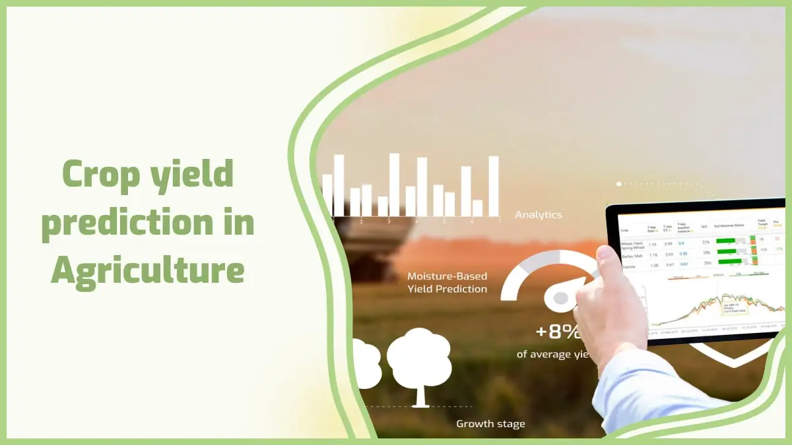

Soil is one of the most important factor in good crop.It helps in provding proper
nutrients
to crop which leads to healthy Crop.
Some of the major factors that affects the crop yeild and Knowning their uses helps the farmers in improving
the crop quality and quantity.
Some of the factors explained on this website are
PH of Soil,
Fertilizers, &
Manure
PH of Soil
The pH of soil is a way to calculate if the soil is acidic or basic and this plays
greatly in
determining how much nutrients will be available for use by the plant, and each microbe. The pH of most plants
has a slightly acidic to neutral (6.0-7.0). Alkaline or acidic soil pH does not release the required nutrients
to the plant, which would result in low growth and crop yields. Scheduled soil tests and applications of
potassium bicarbonate to correct low pH and lower pH for continued good growth.
Fertilizer
Fertilizers are substances added to soil or plants to provide essential nutrients for growth. They can be
organic (natural, like compost and manure) or inorganic (synthetic, like urea and NPK fertilizers).
Overuse can lead to soil degradation and environmental pollution, so balanced application is essential.
Manure
Manure is an organic fertilizer made from decomposed animal waste, plant residues, and other natural materials.
It enriches the soil with essential nutrients and improves soil structure, fertility, and moisture retention.
Types of Manure:
Farmyard Manure (FYM) – Decomposed mixture of cow dung, urine, and straw.
Green Manure – Freshly grown plants (like legumes) plowed into the soil to increase
nitrogen content.
Compost – Organic waste decomposed by microorganisms for nutrient-rich soil
amendment.
Vermicompost – Decomposed organic matter using earthworms for high-quality manure.
Manure is eco-friendly and enhances long-term soil health without harmful chemical effects.
Price Inflation About Crop
Price inflation in crops refers to the increase in the cost of agricultural products over time due to various
economic and environmental factors.
Soil testing and proper soil management improve crop yield and sustainability.
Yeild Prediction

Accurate crop yield prediction is essential for optimizing agricultural practices and ensuring food security. By
using advanced technologies like AI, machine learning, and data analytics, farmers can predict the expected
yield of their crops based on factors such as weather conditions, soil health, irrigation levels, and crop
variety. This helps in planning better resource management, reducing waste, and enhancing productivity.
Additionally, predictive models can assist in mitigating risks from climate change, pests, and diseases,
ensuring more sustainable and efficient farming practices.